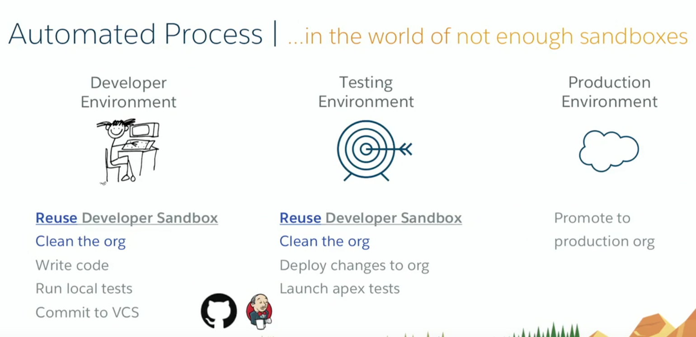
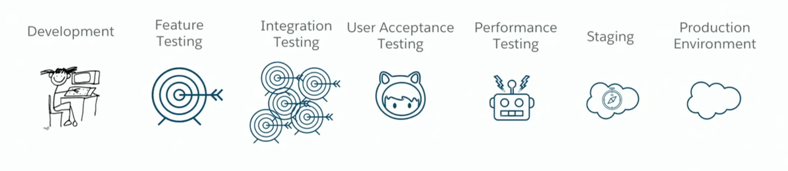

<!DOCTYPE html>
<html lang="en" ng-app="app">

<head>
  <meta charset="UTF-8">
  <title>Salesforce  DX</title>

  <script type="text/javascript" src="https://cdnjs.cloudflare.com/ajax/libs/jquery/3.1.1/jquery.min.js"></script>

  <link rel="stylesheet" href="https://cdnjs.cloudflare.com/ajax/libs/twitter-bootstrap/3.3.7/css/bootstrap.min.css" integrity="sha256-916EbMg70RQy9LHiGkXzG8hSg9EdNy97GazNG/aiY1w=" crossorigin="anonymous" />
  <script src="https://cdnjs.cloudflare.com/ajax/libs/twitter-bootstrap/3.3.7/js/bootstrap.min.js"></script>
  <link rel="stylesheet" href="../css/navbar-green.css">
  <script src="../js/angular.min.js"></script>
  <script src="../js/data-markdown.user.js"></script>


  <script src="../bower_components/marked/marked.min.js"></script>
  <script src="../bower_components/angular-marked/dist/angular-marked.js"></script>

  <link rel="stylesheet" href="../reveal.js/css/reveal.css">
  <link rel="stylesheet" href="../reveal.js/css/theme/white.css" id="theme">

  <!-- Code syntax highlighting -->
  <link rel="stylesheet" href="../reveal.js/lib/css/zenburn.css">

  <!-- Printing and PDF exports -->
  <script>
    var link = document.createElement('link');
    link.rel = 'stylesheet';
    link.type = 'text/css';
    link.href = window.location.search.match(/print-pdf/gi) ? '../reveal.js/css/print/pdf.css' : '../reveal.js/css/print/paper.css';
    document.getElementsByTagName('head')[0].appendChild(link);
  </script>

  <!--[if lt IE 9]>
    		<script src="../reveal.js/lib/js/html5shiv.js"></script>
    		<![endif]-->

  <style>
    .reveal .slide-number {
      font-size: 0.5em;
    }

    .simg {
      border-radius: 10px;
      border: 1px;
    }

    .reveal section ul li,
    .reveal section p {
      font-size: .8em !important;
    }

    .reveal section pre code {
      font-size: 0.7em !important;
    }
  </style>


</head>

<body>


  <nav class="navbar navbar-default" role="navigation">
    <!-- Brand and toggle get grouped for better mobile display -->
    <div class="navbar-header">
      <button type="button" class="navbar-toggle" data-toggle="collapse" data-target="#bs-example-navbar-collapse-1">
        <span class="sr-only">Toggle navigation</span>
        <span class="icon-bar"></span>
        <span class="icon-bar"></span>
        <span class="icon-bar"></span>
      </button>
      <a class="navbar-brand" href="javascript:void(0)">Salesforce  DX</a>
    </div>

    <!-- Collect the nav links, forms, and other content for toggling -->
    <div class="collapse navbar-collapse" id="bs-example-navbar-collapse-1">
      <ul class="nav navbar-nav">
        <li class="active"><a href="javascript:void(0)">Home</a></li>
      </ul>
      <ul class="nav navbar-nav">
        <li><a href="../index.html">Main</a></li>
      </ul>

      <div class="inner-addon right-addon navbar-form navbar-right">
        <i class="glyphicon glyphicon-search"></i>
        <input type="text" class="form-control" placeholder="Search" />
      </div>

      <ul class="nav navbar-nav navbar-right">
        <li class="dropdown ">
          <a href="javascript:void(0)" class="dropdown-toggle" data-toggle="dropdown" aria-expanded="false">Help <b class="caret"></b></a>
          <ul class="dropdown-menu">
              <li><a href="./help.html">Help Topics</a></li>
          </ul>
        </li>
      </ul>
    </div>
    <!-- /.navbar-collapse -->
  </nav>
  <!--
  <div class="container" ng-controller='MainCtrl'>
    <div marked src="'pevents.md'"></div>
  </div>
-->


  <div class="reveal">

    <!-- Any section element inside of this container is displayed as a slide -->
    <div class="slides">

      <section id="home">
        <h4>Salesforce DX</h4>
        
       </section>

       <section>
         <h4>Goals</h4>
         <ul>
           <li>Source-Driven way to manage and develop apps on Force.com platform
              <ul>
                <li>Source code and metadata exist outside of the Salesforce Org</li>
                <li>Version Control System is source of truth</li>
              </ul>
           </li>

           <li>Team Collaboration</li>
           <li>Agile</li>
           <li>CLI (command-line-interface) to support Continuous Integration (CI) and Delviery (CD)</li>

          <li>Open and Prescriptive Developer Experience</li>
          <li>  Rapid Testing and Development</li>
         </ul>
       </section>

       <section>
         <h4>Sandbox types</h4>
         
         <div style="font-size:30px">With DX</div>
           
        </section>

        <section>
          <h4>Scratch Org Limits</h4>
          <ul>
            <li> A scratch org expires in 7 days unless you set a duration when you create it (max: 30 days)</li>
            <li>200 MB for data, 50 MB for files</li>
          </ul>
          
        </section>


        <section>
          <h4>New Items</h4>
          <ul>
            <li>SFDX CLI</li>
            <li>IDE plugins
               <ul>
                 <li>Apex Code Editor</li>
                 <li>Apex Debugger</li>
                 <li>Lightning Support</li>
                 <li>Visualforce support</li>
                 <li>CLI integration</li>
                 <li>Codescan</li>
               </ul>
            </li>
          </ul>
        </section>

        <section>
          <h4>SFDX CLI</h4>
          <ul>
            <li>
              <a style="font-size:30px;" target="_blank" href="https://github.com/mohan-chinnappan-n/dx-geolocation">Reference</a>
            </li>
          </ul>
          <br/>
          
        </section>

        <section>
          <h4>CLI integration</h4>
          
           
        </section>

        <section>
          <h4>CLI integration - contd.</h4>
          
        </section>

        <section>
          <h4>Extensions</h4>
          
        </section>

        <section>
          <h4>Built-in Codescan</h4>
         
        </section>

        <section>
          <h4>ANT task based Apex Codescan - Jenkins CI</h4>
         
         <a  target="_blank" href="https://github.com/mohan-chinnappan-n/pmd-dist">GitHub</a>
        </section>

        <section>
          <h4>ANT task based Lightning Linter - Jenkins CI</h4>
         
         <br/>
         <a  target="_blank" href="https://github.com/mohan-chinnappan-n/pmd-dist/blob/master/LXLINT.md">GitHub</a>
        </section>


        <section>
          <h4>Lightning Linter on Org</h4>
         
        </section>

        <section>
          <h4>Lightning Linter - Code</h4>
         
        </section>

        <section>
          <h4>Browser Automation Tool</h4>
         
        </section>

        <section>
          <h4>yeoman scaffolding for Lightning Projects</h4>
         
        </section>


      <section>
        <h4>yeoman scaffolding repo</h4>
       
      </section>

      <section>
        <h4>Continuous Integration and Continuous Delivery</h4>
      </section>

       <section>
         <h4>Elements</h4>
         
        </section>

        <section>
          <h4>Principles</h4>
          
         </section>

        <section>
          <h4>Before DX</h4>
          
         </section>


        <section>
          <h4>Before DX - contd.</h4>
          
         </section>

        <section>
          <h4>DX - Developer mind to users hand</h4>
          
         </section>

         <section>
           <h4>Pipeline - Developer mind to users hand</h4>
           
         </section>

         <section>
           <h4>More testing - better product!</h4>
           
           <ul>
               <li>Perf testing and UAT can be swapped, if needed</li>
           </ul>
         </section>


         <section>
           <h4>Branching  - Suggestion!</h4>
           <ul style="font-size:25px;">
             <li>Lineup Branch for every env</li>
             <li>2 developers (my and yer)</li>
             <li><b>develop</b> branch is team's feature branch</li>
             <li><b>integrate</b> branch is lined with what is deployed to UAT</b>
              <li><b>master</b> branch is lined with Staging and Prod</li>
            </li>
           </ul>
           
         </section>


         <section>
           <h4>Branching</h4>
           <ul style="font-size:25px;">
             <li>Current 1.0, need to make 1.1</li>
           </ul>
           
           
           
         </section>

         <section>
           <h4>Branching - contd.</h4>
           <ul style="font-size:25px;">
             <li>Check back to <b>develop</b> branch</li>
           </ul>
           
           <ul style="font-size:25px;">
             <li>CI kicks in and runs set of tests</li>
           </ul>
         </section>

         <section>
           <h4>Branching - contd..</h4>
           <ul style="font-size:25px;">
             <li>Another user finishes the development</li>
           </ul>
           
           <ul style="font-size:25px;">
             <li>This users needs to <b>pull</b> down the changes from <b>develop</b> branch</li>
           </ul>
           
         </section>

         <section>
           <h4>Branching - contd...</h4>
           <ul style="font-size:25px;">
             <li>Run the tests and <b>push</b> into <b>develop</b> branch</li>
           </ul>
           
           <ul style="font-size:25px;">
             <li>After testing, release candiate moved to <b>integrate</b> branch</li>
           </ul>
           
           <ul style="font-size:25px;">
             <li>After integration testing, moved to <b>master</b> branch</li>
           </ul>
           
         </section>

         <section>
           <h4>References</h4>
           <ul style="font-size:20px;">
             <li>
             <a target="_blank" href="https://www.youtube.com/watch?v=wUc1l5keYmo">
               Salesforce DX - Continuous Integration and Continuous Delivery
</a>
             </li>
           </ul>
         </section>


         <section>
           <h4>DX - Hands-on</h4>
           <quote style="font-size:30px;">
              
             An ounce of practice is worth more than tons of preaching. <br/> - Mohandas K Gandhi
          </quote>
         </section>


       <section>
         <h4>Dev Hub</h4>
         <ul>
           <li>Comprises Objects with Permission that allow admins to control level-of-access available to a user and org</li>
           <li>Provides ability to create and manage scratch orgs</li>
           <li>You can choose an org to function as your Dev Hub</li>
           <li>
             <a target="_blank" href="https://developer.salesforce.com/promotions/orgs/dx-signup">Sign up for Dev Hub 30-day Trial Org</a>
           </li>


         </ul>
         <div style="font-size:15px;">Login into DevHub:</div>
         
       </section>

       <section>
         <h4>Install  CLI (command-line-interface)</h4>
         <ul>
           <li> <a href="https://sfdc.co/sfdx_cli_osx">macOS</a> </li>
          <li> <a href="https://sfdc.co/sfdx_cli_win64">Windows 64-bit</a> </li>
           <li> <a href="https://sfdc.co/sfdx_cli_linux">Ubuntu 64-bit</a> </li>
         </ul>
         <pre style="font-size:15px;">
$ sfdx --version
$ sfdx update
sfdx-cli: Updating CLI... already on latest version: 6.1.19-4341549
sfdx-cli: Updating plugins... done
         </pre>

       </section>

       <section>
         <h4>Login to Dev Hub via CLI</h4>
<pre style="font-size:13px;">
$ sfdx force:auth:web:login  -h
Usage: sfdx force:auth:web:login [-i <string>] [-r <url>] [-d] [-s] [-a <string>] [--json] [--loglevel <string>]

authorize an org using the web login flow

Flags:
 -i, --clientid CLIENTID         OAuth client ID (sometimes called the consumer key)
 -r, --instanceurl INSTANCEURL   the login URL of the instance the org lives on
 -a, --setalias SETALIAS         set an alias for the authenticated org
 -d, --setdefaultdevhubusername  set the authenticated org as the default dev hub org for scratch org creation
 -s, --setdefaultusername        set the authenticated org as the default username that all commands run against
 --json                          format output as json
 --loglevel LOGLEVEL             logging level for this command invocation (error*,trace,debug,info,warn,fatal)

To log in to a sandbox, set --instanceurl to https://test.salesforce.com.

Examples:
   $ sfdx force:auth:web:login -a TestOrg1
   $ sfdx force:auth:web:login -i <OAuth client id>
   $ sfdx force:auth:web:login -r https://test.salesforce.com
</pre>

<pre style="font-size:13px;">
  $ sfdx force:auth:web:login -d -a DevHub
  Successfully authorized username with org ID orgid
</pre>


</section>

<section>
  <h4>Login to Dev Hub via CLI - contd.</h4>

  <pre style="font-size:13px;">
You may now close the browser
   </pre>
</section>


<section>
  <h4>List the orgs with CLI</h4>
  <pre style="font-size:13px;">
$ sfdx force:org:list
=== Orgs
     ALIAS   USERNAME                              ORG ID              CONNECTED STATUS
───  ──────  ────────────────────────────────────  ──────────────────  ─────────────────
(D)  DevHub  mohan.chinnappan.n_dh_1@gmail.com     00D6A000001LbwLUAS  Connected

   </pre>
</section>


<section>
  <h4>Create a Salesforce DX Project</h4>
  <pre style="font-size:11px;padding:5px;">
$ <b>sfdx force:project:create -n geolocation</b>
target dir = /Users/mchinnappan/sfdx
   create geolocation/sfdx-project.json
   create geolocation/README.md
   create geolocation/.forceignore
   create geolocation/config/project-scratch-def.json
$ ls
geolocation	sfdx-simple
~/sfdx:
$ <b>tree geolocation/</b>
geolocation/
├── README.md
├── config
│   └── project-scratch-def.json <b>- config for scratch org</b>
├── force-app <b>- folder containing source code of the project</b>
│   └── main
│       └── default
│           └── aura
└── sfdx-project.json <b> - has project info, path to source, clases, metadata, namespace, api-version</b>

5 directories, 3 files
$ <b>cat geolocation/config/project-scratch-def.json</b>
{
    "orgName": "mchinnappan Company",
    "edition": "Developer",
    "orgPreferences" : {
        "enabled": ["S1DesktopEnabled"]
    }
}

$ <b>cat geolocation/sfdx-project.json</b>
{
  "packageDirectories": [
    {
      "path": "force-app",
      "default": true
    }
  ],
  "namespace": "",
  "sfdcLoginUrl": "https://login.salesforce.com",
  "sourceApiVersion": "41.0"
}

  </pre>
</section>


     <section>
       <h4>Scratch Org</h4>
       <ul>
         <li>Temporary Salesforce environments where you do the bulk of your development work in  source-driven development paradigm (SFDX)
         </li>

          <li>You can :
            <ul>
            <li> Push the source and metadata to a scratch org</li>
            <li>Pull any changes you make in the scratch org back to your local project</li>
            <li>Sync this project with your VCS (version control system) repo</li>
          </ul>
        </li>

       </ul>
     </section>


     <section>
       <h4>List Active and Daily Scratch Orgs</h4>
       <pre style="font-size:12px;">

$ <b>sfdx force:limits:api:display -u DevHub</b>
NAME                                   REMAINING  MAXIMUM
─────────────────────────────────────  ─────────  ─────────
ActiveScratchOrgs                      18         20
ConcurrentAsyncGetReportInstances      200        200
ConcurrentSyncReportRuns               20         20
DailyApiRequests                       14998      15000
DailyAsyncApexExecutions               250000     250000
DailyBulkApiRequests                   10000      10000
DailyDurableGenericStreamingApiEvents  10000      10000
DailyDurableStreamingApiEvents         10000      10000
DailyGenericStreamingApiEvents         10000      10000
DailyScratchOrgs                       40         40
DailyStreamingApiEvents                10000      10000
DailyWorkflowEmails                    150        150
DataStorageMB                          1073       1073
DurableStreamingApiConcurrentClients   20         20
FileStorageMB                          1073       1073
HourlyAsyncReportRuns                  1200       1200
HourlyDashboardRefreshes               200        200
HourlyDashboardResults                 5000       5000
HourlyDashboardStatuses                999999999  999999999
HourlyODataCallout                     10000      10000
HourlySyncReportRuns                   500        500
HourlyTimeBasedWorkflow                50         50
MassEmail                              10         10
PermissionSets                         1500       1500
SingleEmail                            15         15
StreamingApiConcurrentClients          20         20
       </pre>
     </section>

     <section>
       <h4>Scratch Org Parameters</h4>
       
     </section>

     </section>

     <section>
       <h4>Create Scratch Org</h4>
        <pre style="font-size:11px;padding:5px;">
$ <b>sfdx force:org:create -h</b>
Usage: sfdx force:org:create name=value... [-f <filepath>] [-n] [-c] [-i <string>] [-s] [-a <string>] [-w <minutes>] [-d <number>] [-v <string>] [--json] [--loglevel <string>]
create a scratch org
Flags:
-i, --clientid CLIENTID                          connected app consumer key
-f, --definitionfile DEFINITIONFILE              path to a scratch org definition file
-d, --durationdays DURATIONDAYS                  duration of the scratch org (in days) (default:7, min:1, max:30)
-c, --noancestors                                do not include second-generation package ancestors in the scratch org
-n, --nonamespace                                creates the scratch org with no namespace
-a, --setalias SETALIAS                          set an alias for for the created scratch org
-s, --setdefaultusername                         <b>set the created org as the default org for this project</b>
-v, --targetdevhubusername TARGETDEVHUBUSERNAME  username or alias for the dev hub org; overrides default dev hub org
-w, --wait WAIT                                  the streaming client socket timeout (in minutes) (default:6, min:2)
--json                                           format output as json
--loglevel LOGLEVEL                              logging level for this command invocation (error*,trace,debug,info,warn,fatal)
To set up a connected app for your new scratch org, specify the value that was returned when you created a connected app in your Dev Hub org as --clientid.
Examples:
$ sfdx force:org:create -f config/enterprise-scratch-def.json -a TestOrg1
$ sfdx force:org:create -a MyDevOrg -s -v me@myhub.org edition=Developer
$ sfdx force:org:create -f config/enterprise-scratch-def.json -a OrgWithOverrides username=testuser1@mycompany.org
#----
$ cd geolocation/
$ <b>sfdx force:org:create -s -f config/project-scratch-def.json -a geolocationAppScratch1</b>
Successfully created scratch org: 00DR00000001xNfMAI, username: test-irkcftkmuyzr@example.com
#----
$ <b>sfdx force:org:list</b>
=== Orgs
     ALIAS   USERNAME                              ORG ID              CONNECTED STATUS
───  ──────  ────────────────────────────────────  ──────────────────  ─────────────────
(D)  DevHub  mohan.chinnappan.n_dh_1@gmail.com     00D6A000001LbwLUAS  Connected
     ALIAS                   SCRATCH ORG NAME     USERNAME                       ORG ID              EXPIRATION DATE
───  ──────────────────────  ───────────────────  ─────────────────────────────  ──────────────────  ───────────────
(U)  geolocationAppScratch1  mchinnappan Company  <b>test-irkcftkmuyzr@example.com</b>  <b>00DR00000001xNfMAI</b>  2018-02-16
</pre>
     </section>

<section>
  <h4>Open the created scratch org</h4>
<pre style="font-size:11px;padding:5px;">

$ sfdx force:org:open -h
Usage: sfdx force:org:open [-p <string>] [-r] [-u <string>] [--json] [--loglevel <string>]
open an org in your browser

Flags:
-p, --path PATH                      navigation URL path
-u, --targetusername TARGETUSERNAME  username or alias for the target org; overrides default target org
-r, --urlonly                        display navigation URL, but don’t launch browser
--json                               format output as json
--loglevel LOGLEVEL                  logging level for this command invocation (error*,trace,debug,info,warn,fatal)

<b>Opens your default scratch org, or another org that you specify.</b>

To open a specific page, specify the portion of the URL after "yourInstance.salesforce.com/" as --path.
For example, specify "--path one/one.app" to open Lightning Experience, or specify "--path /apex/YourPage"
to open a Visualforce page.

To generate a URL but not launch your browser, specify --urlonly.

Examples:
$ sfdx force:org:open
$ sfdx force:org:open -u me@my.org
$ sfdx force:org:open -u MyTestOrg1
$ sfdx force:org:open -r -p one/one.app
#----
$ sfdx force:org:open
Access org <b>00DR00000001xNfMAI</b> as user <b>test-irkcftkmuyzr@example.com</b> with
the following URL: https://java-enterprise-1064-dev-ed.cs2.my.salesforce.com/secur/frontdoor.jsp?sid=00DR00000001xNf!AQgAQM5.0dDRj.rFldgd6qTLG8qPSRuWuxCvrljFEjcatDhElIZ33_tx8tLwkt3IZ8QZiDGK44i3kbRPymejTlY.R.t1xdeP


  </pre>
</section>

<section>
  <h4>Create a Permission Set</h4>
  <ul>
    <li>Create Permission Set <b>Geolocation</b> for Account.Location</li>
    
  </ul>
</section>

<section>
  <h4>Assign Permission Set to users using  CLI</h4>
  <pre style="font-size:11px;padding:5px;">
$ <b>sfdx force:user:permset:assign -h</b>
Usage: sfdx force:user:permset:assign -n <string> [-o <string>...] [-u <string>] [--json] [--loglevel <string>]
assign a permission set to one or more users of an org

Flags:
-o, --onbehalfof ONBEHALFOF          comma-separated list of usernames or aliases to assign the permission set to
-n, --permsetname PERMSETNAME        (required) the name of the permission set to assign
-u, --targetusername TARGETUSERNAME  username or alias for the target org; overrides default target org
--json                               format output as json
--loglevel LOGLEVEL                  logging level for this command invocation (error*,trace,debug,info,warn,fatal)

Defaults to the defaultusername.
Examples:
$ sfdx force:user:permset:assign -n DreamHouse
$ sfdx force:user:permset:assign -n DreamHouse -u me@my.org
$ sfdx force:user:permset:assign -n DreamHouse -o user1@my.org,user2,user3
</pre>

<pre style="font-size:11px;padding:5px;">
$ <b>sfdx force:user:permset:assign -n Geolocation</b>
=== Permsets Assigned
USERNAME                       PERMISSION SET ASSIGNMENT
─────────────────────────────  ─────────────────────────
test-irkcftkmuyzr@example.com  Geolocation

</pre>

<pre style="font-size:11px;padding:5px;">Now local project is out-of-date with the scratch org, since we did some changes using UI.
Let us see how we can <b>Pull</b> these changes  into local project folder (geolocation)?
</pre>

</section>

<section>
  <h4>Pull command</h4>
<pre style="font-size:11px;padding:5px;">

$ <b>sfdx force:source:pull -h</b>
Usage: sfdx force:source:pull [-w <minutes>] [-f] [-u <string>] [--json] [--loglevel <string>]

pull source from the scratch org to the project

Flags:
-f, --forceoverwrite                 ignore conflict warnings and overwrite changes to the project
-u, --targetusername TARGETUSERNAME  username or alias for the target org; overrides default target org
-w, --wait WAIT                      wait time for command to finish in minutes (default: 33) (default:33, min:1)
--json                               format output as json
--loglevel LOGLEVEL                  logging level for this command invocation (error*,trace,debug,info,warn,fatal)

If the command detects a conflict, it displays the conflicts but does not complete the process. After reviewing the conflict, rerun the command with the --forceoverwrite parameter.

</pre>

<pre style="font-size:11px;padding:5px;">

$ <b>sfdx force:source:pull</b>
=== Pulled Source
STATE  FULL NAME                               TYPE           PROJECT PATH
─────  ──────────────────────────────────────  ─────────────  ─────────────────────────────────────────────────────────────────────────────────────
Add    <b>Account.Location__c</b>                    <b>CustomField</b>    force-app/main/default/objects/Account/fields/Location__c.field-meta.xml
Add    Account-Account Layout                  Layout         force-app/main/default/layouts/Account-Account Layout.layout-meta.xml
Add    Account-Account %28Support%29 Layout    Layout         force-app/main/default/layouts/Account-Account %28Support%29 Layout.layout-meta.xml
Add    Account-Account %28Sales%29 Layout      Layout         force-app/main/default/layouts/Account-Account %28Sales%29 Layout.layout-meta.xml
Add    Account-Account %28Marketing%29 Layout  Layout         force-app/main/default/layouts/Account-Account %28Marketing%29 Layout.layout-meta.xml
Add    <b>Geolocation</b>                           <b>PermissionSet</b>   force-app/main/default/permissionsets/Geolocation.permissionset-meta.xml

</pre>
</section>

<section>
  <h4>Version Control</h4>
  <pre style="font-size:11px;padding:5px;">

$ git init
$ git add -A
$ git commit -m 'Add custom object Account.location and permission set Geolocation'

  </pre>
</section>

<section>
  <h4>Add Some Data via UI</h4>
  
</section>

<section>
  <h4>Export Scratch Org to local folder</h4>

  <pre style="font-size:11px;padding:5px;">

$ <b>sfdx force:data:tree:export -h</b>
Usage: sfdx force:data:tree:export -q <string> [-p] [-x <string>] [-d <directory>] [-u <string>] [--json] [--loglevel <string>]

export data from an org into sObject tree format for force:data:tree:import consumption

Flags:
-d, --outputdir OUTPUTDIR            directory to store files
-p, --plan                           generate mulitple sobject tree files and a plan definition file for aggregated import
-x, --prefix PREFIX                  prefix of generated files
-q, --query QUERY                    (required) soql query, or filepath of file containing a soql query, to retrieve records
-u, --targetusername TARGETUSERNAME  username or alias for the target org; overrides default target org
--json                               format output as json
--loglevel LOGLEVEL                  logging level for this command invocation (error*,trace,debug,info,warn,fatal)

Generates JSON files for use with the force:data:tree:import command.

Examples:
$ sfdx force:data:tree:export -q "SELECT Id, Name, (SELECT Name, Address__c FROM Properties__r) FROM Broker__c"
$ sfdx force:data:tree:export -q <path to file containing soql query> -x export-demo -d /tmp/sfdx-out -p

</pre>
<pre style="font-size:11px;padding:5px;">

$ mkdir data
$ sfdx force:data:tree:export \
 -q "SELECT Name, Location__Latitude__s, Location__Longitude__s FROM Account WHERE Location__Latitude__s != NULL AND Location__Longitude__s != NULL" -d ./data
Wrote 3 records to <b>data/Account.json</b>
</pre>

</section>

<section>
  <h4>Exported Data</h4>

<pre style="font-size:11px;padding:5px;">

$ cat data/Account.json | jq
{
  "records": [
    {
      "attributes": {
        "type": "Account",
        "referenceId": "AccountRef1"
      },
      "Name": "Marriott Marquis",
      "Location__Latitude__s": 37.785143,
      "Location__Longitude__s": -122.403405
    },
    {
      "attributes": {
        "type": "Account",
        "referenceId": "AccountRef2"
      },
      "Name": "Hilton Union Square",
      "Location__Latitude__s": 37.786164,
      "Location__Longitude__s": -122.410137
    },
    {
      "attributes": {
        "type": "Account",
        "referenceId": "AccountRef3"
      },
      "Name": "Hyatt",
      "Location__Latitude__s": 37.794157,
      "Location__Longitude__s": -122.396311
    }
  ]
}
</pre>
</section>


<section>
  <h4>Import data into Scratch Org from Local Folder</h4>
<pre style="font-size:11px;padding:5px;">

$ <b>sfdx force:data:tree:import -h</b>
Usage: sfdx force:data:tree:import (-f <filepath>... | -p <filepath>) [-c <string>] [--confighelp] [-u <string>] [--json] [--loglevel <string>]

<b>import data into an org using SObject Tree Save API</b>

Flags:
-c, --contenttype CONTENTTYPE            if data file extension is not .json, provide content type (applies to all files)
-p, --plan PLAN                          path to plan to insert multiple data files that have master-detail relationships
-f, --sobjecttreefiles SOBJECTTREEFILES  comma-delimited, ordered paths of json files containing collection of record trees to insert
-u, --targetusername TARGETUSERNAME      username or alias for the target org; overrides default target org
--confighelp                             display schema information for the --plan configuration file to stdout; if you use this option, all other options except --json are ignored
--json                                   format output as json
--loglevel LOGLEVEL                      logging level for this command invocation (error*,trace,debug,info,warn,fatal)

To generate JSON files for use with force:data:tree:import, run "sfdx force:data:tree:export".

Examples:
To import records as individual files, first run the export commands:
$ sfdx force:data:tree:export -q "SELECT Id, Name FROM Account"
$ sfdx force:data:tree:export -q "SELECT Id, LastName, FirstName FROM Contact"
Then run the import command:
$ sfdx force:data:tree:import -f Contact.json,Account.json -u me@my.org

To import multiple data files as part of a plan, first run the export command with the -p | --plan flag:
$ sfdx force:data:tree:export -p -q "SELECT Id, Name, (SELECT Id, LastName, FirstName FROM Contacts) FROM Account"
Then run the import command, supplying a filepath value for the -p | --plan parameter:
$ sfdx force:data:tree:import -p Account-Contact-plan.json -u me@my.org

----

In our case: Importing into our Scratch Org:

$ <b>sfdx force:data:tree:<i>import</i> -f data/Account.json</b>
  </pre>
</section>


 <section>
   <h4>Creating Apex Class using CLI</h4>
<pre style="font-size:11px;padding:5px;">

$ <b>sfdx force:apex:class:create -h</b>
Usage: sfdx force:apex:class:create -n <string> [-t <string>] [-d <string>] [-a <string>] [--json] [--loglevel <string>]
<b>create an Apex class</b>
Flags:
-a, --apiversion APIVERSION  API version number (41.0*,40.0)
-n, --classname CLASSNAME    (required) name of the generated Apex class
-d, --outputdir OUTPUTDIR    folder for saving the created files
-t, --template TEMPLATE      template to use for file creation (DefaultApexClass*,ApexException,ApexUnitTest,InboundEmailService)
--json                       JSON output
--loglevel LOGLEVEL          logging level for this command invocation (error*,trace,debug,info,warn,fatal)

If not supplied, the apiversion, template, and outputdir use default values.
The outputdir can be an absolute path or relative to the current working directory.
Examples:
$ sfdx force:apex:class:create -n MyClass
$ sfdx force:apex:class:create -n MyClass -d classes
</pre>

<pre style="font-size:11px;padding:5px;">
$ <b>sfdx force:apex:class:create -n AccountCtrl -d force-app/main/default/classes</b>
target dir = /Users/mchinnappan/sfdx/geolocation/force-app/main/default/classes
create AccountCtrl.cls
create AccountCtrl.cls-meta.xml
</pre>

<pre style="font-size:11px;padding:5px;">
$ <b>tree force-app/main/default/classes/</b>
force-app/main/default/classes/
├── AccountCtrl.cls
└── AccountCtrl.cls-meta.xml
</pre>

<pre style="font-size:11px;padding:5px;">
$ <b>cat force-app/main/default/classes/AccountCtrl.cls</b>
public with sharing class AccountCtrl {
  public AccountCtrl() {

  }
}
</pre>
 </section>

<section>
  <h4>AccountCtrl - Modified</h4>
  <pre style="font-size:18px;padding:5px;">
$ <b>cat force-app/main/default/classes/AccountCtrl.cls</b>
<code>
public with sharing class AccountCtrl {
   @AuraEnabled
   public static List<Account> findAll() {
      return [SELECT Id, Name, Location__Latitude__s, Location__Longitude__s FROM Account
            WHERE Location__Latitude__s != NULL AND Location__Longitude__s != NULL
            LIMIT 50];
   }
}
</code>
</pre>


</section>


<section>
  <h4>Pushing Code to Org from Local Project Folder</h4>

  <pre style="font-size:11px;padding:5px;">

$ <b>sfdx force:source:push -h</b>
Usage: sfdx force:source:push [-f] [-g] [-w <minutes>] [-u <string>] [--json] [--loglevel <string>]

push source to an org from the project

Flags:
-f, --forceoverwrite                 ignore conflict warnings and overwrite changes to scratch org
-g, --ignorewarnings                 deploy changes even if warnings are generated
-u, --targetusername TARGETUSERNAME  username or alias for the target org; overrides default target org
-w, --wait WAIT                      wait time for command to finish in minutes (default: 33) (default:33, min:1)
--json                               format output as json
--loglevel LOGLEVEL                  logging level for this command invocation (error*,trace,debug,info,warn,fatal)

If the command detects a conflict, it displays the conflicts but does not complete the process. After reviewing the conflict, rerun the command with the --forceoverwrite parameter.


  </pre>

  <pre style="font-size:11px;padding:5px;">

$ <b>sfdx force:source:push</b>
=== Pushed Source
STATE  FULL NAME    TYPE       PROJECT PATH
─────  ───────────  ─────────  ───────────────────────────────────────────────────────
Add    AccountCtrl  ApexClass  force-app/main/default/classes/AccountCtrl.cls
Add    AccountCtrl  ApexClass  force-app/main/default/classes/AccountCtrl.cls-meta.xml

  </pre>
</section>

<section>
  <h4>Pushing Code to Org from Local Project Folder - contd.</h4>

</section>

<section>
  <h4>Create Lightning Component using CLI</h4>

  <pre style="font-size:11px;padding:5px;">
$ <b>sfdx force:lightning:component:create -h</b>
Usage: sfdx force:lightning:component:create -n <string> [-t <string>] [-d <string>] [-a <string>] [--json] [--loglevel <string>]
create a Lightning component
Flags:
-a, --apiversion APIVERSION        API version number (41.0*,40.0)
-n, --componentname COMPONENTNAME  (required) name of the generated Lightning component
-d, --outputdir OUTPUTDIR          folder for saving the created files
-t, --template TEMPLATE            template to use for file creation (DefaultLightningCmp*)
--json                             JSON output
--loglevel LOGLEVEL                logging level for this command invocation (error*,trace,debug,info,warn,fatal)
If not supplied, the apiversion, template, and outputdir use default values.
The outputdir can be an absolute path or relative to the current working directory.
Examples:
$ sfdx force:lightning:component:create -n mycomponent
$ sfdx force:lightning:component:create -n mycomponent -d lightning
  </pre>

  <pre style="font-size:11px;padding:5px;">
$ <b>sfdx force:lightning:component:create -n AccountLocator -d force-app/main/default/aura</b>
target dir = /Users/mchinnappan/sfdx/geolocation/force-app/main/default/aura
create AccountLocator/AccountLocator.cmp
create AccountLocator/AccountLocator.cmp-meta.xml
create AccountLocator/AccountLocatorController.js
create AccountLocator/AccountLocatorHelper.js
create AccountLocator/AccountLocator.css
create AccountLocator/AccountLocatorRenderer.js
create AccountLocator/AccountLocator.svg
create AccountLocator/AccountLocator.auradoc
create AccountLocator/AccountLocator.design

$ <b>tree force-app/main/default/aura/</b>
force-app/main/default/aura/
└── <b>AccountLocator</b>
  ├── AccountLocator.auradoc
  ├── AccountLocator.cmp
  ├── AccountLocator.cmp-meta.xml
  ├── AccountLocator.css
  ├── AccountLocator.design
  ├── AccountLocator.svg
  ├── AccountLocatorController.js
  ├── AccountLocatorHelper.js
  └── AccountLocatorRenderer.js
  </pre>
</section>

<section>
  <h4>Create Lightning Component using CLI - contd.</h4>
  <pre style="font-size:13px;padding:5px;">

$ cat force-app/main/default/aura/AccountLocator/AccountLocator.cmp

<code><aura:component>

</aura:component>
</code>

$ cat force-app/main/default/aura/AccountLocator/AccountLocatorController.js
<code>
({
    myAction : function(component, event, helper) {

    }
})
</code>

$ cat force-app/main/default/aura/AccountLocator/AccountLocatorHelper.js
<code>
({
    helperMethod : function() {

    }
})
</code>

  </pre>
</section>

<section>
  <h4>Update the generated component and stylesheet </h4>

  <pre style="font-size:14px;padding:5px;">
$ cat force-app/main/default/aura/AccountLocator/AccountLocator.cmp
<code>
<aura:component implements="force:appHostable">
  <div>
    <div>AccountMap goes here</div>
    <div>AccountList goes here</div>
  </div>
</aura:component>
</code>

$ cat force-app/main/default/aura/AccountLocator/AccountLocator.css
<code>
.THIS {
  position:absolute;
  height: 100%;
  width: 100%;
  background: #FFFFFF;
}

.THIS>div {
  height: 50%;
}
</code>

</section>

<section>
  <h4>Push the generated component artifacts into Org</h4>
  <pre style="font-size:14px;padding:5px;">
    $ sfdx force:source:push
    === Pushed Source
    STATE  FULL NAME                                   TYPE                  PROJECT PATH
    ─────  ──────────────────────────────────────────  ────────────────────  ──────────────────────────────────────────────────────────────────────
    Add    AccountLocator/AccountLocator.auradoc       AuraDefinitionBundle  force-app/main/default/aura/AccountLocator/AccountLocator.auradoc
    Add    AccountLocator/AccountLocator.cmp           AuraDefinitionBundle  force-app/main/default/aura/AccountLocator/AccountLocator.cmp
    Add    AccountLocator/AccountLocator.cmp           AuraDefinitionBundle  force-app/main/default/aura/AccountLocator/AccountLocator.cmp-meta.xml
    Add    AccountLocator/AccountLocator.css           AuraDefinitionBundle  force-app/main/default/aura/AccountLocator/AccountLocator.css
    Add    AccountLocator/AccountLocator.design        AuraDefinitionBundle  force-app/main/default/aura/AccountLocator/AccountLocator.design
    Add    AccountLocator/AccountLocator.svg           AuraDefinitionBundle  force-app/main/default/aura/AccountLocator/AccountLocator.svg
    Add    AccountLocator/AccountLocatorController.js  AuraDefinitionBundle  force-app/main/default/aura/AccountLocator/AccountLocatorController.js
    Add    AccountLocator/AccountLocatorHelper.js      AuraDefinitionBundle  force-app/main/default/aura/AccountLocator/AccountLocatorHelper.js
    Add    AccountLocator/AccountLocatorRenderer.js    AuraDefinitionBundle  force-app/main/default/aura/AccountLocator/AccountLocatorRenderer.js

  </pre>
</section>

<section>
  <h4>Create Tab for the component</h4>
  <div  style="font-size:14px;padding:5px;">View the Lightning Component in Scratch Org</div>

  
  
  

</section>

<section>
  <h4>Pull Tab creation updates to Project Local Folder</h4>

 <pre style="font-size:14px;padding:5px;">

$ <b>sfdx force:source:pull</b>
=== Pulled Source
STATE  FULL NAME                    TYPE       PROJECT PATH
─────  ───────────────────────────  ─────────  ────────────────────────────────────────────────────────────────────────────
Add    Account_Locator              <b>CustomTab</b>  force-app/main/default/tabs/Account_Locator.tab-meta.xml
Add    Custom%3A Support Profile    Profile    force-app/main/default/profiles/Custom%3A Support Profile.profile-meta.xml
Add    Custom%3A Sales Profile      Profile    force-app/main/default/profiles/Custom%3A Sales Profile.profile-meta.xml
Add    Custom%3A Marketing Profile  Profile    force-app/main/default/profiles/Custom%3A Marketing Profile.profile-meta.xml
Add    Admin                        Profile    force-app/main/default/profiles/Admin.profile-meta.xml

 </pre>

</section>

<section>
  <h4>Create AccountListItem component using CLI</h4>

 <pre style="font-size:14px;padding:5px;">

$ <b>sfdx force:lightning:component:create -n AccountListItem -d force-app/main/default/aura</b>
# update the component to:
$ cat force-app/main/default/aura/AccountListItem/AccountListItem.cmp
<code>
<aura:component>
   <aura:attribute name="account" type="Account"/>
   <li><a>{!v.account.Name}</a></li>
</aura:component>

</code>
# update stylesheet to:
$ cat force-app/main/default/aura/AccountListItem/AccountListItem.css
<code>
.THIS { border-bottom: solid 1px #DDDDDD; }
.THIS a { display: block; padding: 20px; color: inherit; }
.THIS a:active { background-color: #E8F4FB; }
</code>

</pre>

</section>


<section>
  <h4>Create AccountList component using CLI</h4>

 <pre style="font-size:10px;padding:5px;">

$ <b>sfdx force:lightning:component:create -n AccountList -d force-app/main/default/aura</b>

</pre>
 <pre style="font-size:14px;padding:5px;">
 # update the component to:
 $ cat force-app/main/default/aura/AccountList/AccountList.cmp
 <code>
 <aura:component controller="AccountCtrl">
    <aura:attribute name="accounts" type="Account[]"/>
    <aura:handler name="init" value="{!this}" action="{!c.doInit}" />
    <ul>
        <aura:iteration items="{!v.accounts}" var="account">
            <c:AccountListItem account="{!account}"/>
        </aura:iteration>
    </ul>
</aura:component>
 </code>
 # update AccountListController.js to:
$ cat force-app/main/default/aura/AccountList/AccountListController.js
<code>
({
  doInit : function(component, event) {
      var action = component.get("c.findAll");
      action.setCallback(this, function(a) {
        component.set("v.accounts", a.getReturnValue());
      });
      $A.enqueueAction(action);
  }
})
</code>


</pre>
</section>

<section>
  <h4>AccountList stylesheet update:</h4>
   <pre style="font-size:14px;padding:5px;">


      # update stylesheet to:
      $ cat force-app/main/default/aura/AccountListItem/AccountList.css
      <code>
        .THIS {
            list-style-type: none;
            padding: 0;
            margin: 0;
            background: #FFFFFF;
             height: 100%;
        }
      </code>
  </pre>
</section>

<section>
  <h4>AccountLocator Component update:</h4>
   <pre style="font-size:15px;padding:5px;">
$ cat force-app/main/default/aura/AccountLocator/AccountLocator.cmp
<code>
<aura:component implements="force:appHostable">
  <div>
    <div>AccountMap goes here</div>
    <div> <c:AccountList></c:AccountList></div>
  </div>
</aura:component>
</code>
</pre>
</section>

<section>
  <h4>Push code from Local Project folder to Org</h4>
     <pre style="font-size:15px;padding:5px;">
    $ sfdx force:source:push
  </pre>

  
</section>

<section>
  <h4>Install Leaflet JS lib  in Static Resources</h4>
  
 <pre style="font-size:10px;padding:5px;">
# pull the static resouces into Local Project folder
$ sfdx force:source:pull
=== Pulled Source
STATE    FULL NAME  TYPE            PROJECT PATH
───────  ─────────  ──────────────  ────────────────────────────────────────────────────────────────────────
Add      leaflet    StaticResource  force-app/main/default/staticresources/leaflet.resource-meta.xml
Changed  leaflet    StaticResource  force-app/main/default/staticresources/leaflet/images/layers-2x.png
Changed  leaflet    StaticResource  force-app/main/default/staticresources/leaflet/images/layers.png
Changed  leaflet    StaticResource  force-app/main/default/staticresources/leaflet/images/marker-icon-2x.png
Changed  leaflet    StaticResource  force-app/main/default/staticresources/leaflet/images/marker-icon.png
Changed  leaflet    StaticResource  force-app/main/default/staticresources/leaflet/images/marker-shadow.png
Changed  leaflet    StaticResource  force-app/main/default/staticresources/leaflet/leaflet-src.js
Changed  leaflet    StaticResource  force-app/main/default/staticresources/leaflet/leaflet-src.js.map
Changed  leaflet    StaticResource  force-app/main/default/staticresources/leaflet/leaflet.css
Changed  leaflet    StaticResource  force-app/main/default/staticresources/leaflet/leaflet.js
Changed  leaflet    StaticResource  force-app/main/default/staticresources/leaflet/leaflet.js.map
  </pre>
</section>

<section>
  <h4>Create AccountMap Component using CLI</h4>
<pre style="font-size:11px;padding:5px;">
$ sfdx force:lightning:component:create -n AccountMap -d force-app/main/default/aura
# Update AccountMap Component as:
$ cat force-app/main/default/aura/AccountMap/AccountMap.cmp
<code>
<aura:component>
  <aura:attribute name="map" type="Object"></aura:attribute>
  <ltng:require styles="/resource/leaflet/leaflet.css" scripts="/resource/leaflet/leaflet.js"
      afterScriptsLoaded="{!c.jsLoaded}" ></ltng:require>
  <div id="map"></div>
</aura:component>
</code>
# update AccountMapController.js as:
$ cat force-app/main/default/aura/AccountMap/AccountMapController.js
<code data-trim data-noescape>
({
   jsLoaded: function(component, event, helper) {
      var map = L.map('map', {zoomControl: false}).setView([37.784173, -122.401557], 14);
      L.tileLayer('https://server.arcgisonline.com/ArcGIS/rest/services/World_Street_Map/MapServer/tile/{z}/{y}/{x}',
        {
              attribution: 'Tiles © Esri'
        }).addTo(map);
      component.set("v.map", map);
  }
})
</code>
$ cat force-app/main/default/aura/AccountMap/AccountMap.css
<code> .THIS { width: 100%; height: 100%; } </code>
$ cat force-app/main/default/aura/AccountLocator/AccountLocator.cmp
<code>
<aura:component implements="force:appHostable">
  <div>
    <div><c:AccountMap/></div>
    <div><c:AccountList/></div>
  </div>
</aura:component>
</code>
# Push to Scratch org from Local Project Folder
$ sfdx force:source:push


  </pre>
</section>


<section>
  <h4>AccountLocator Component with Map in Place</h4>
  
</section>


<section>
  <h4>Create Event - AccountsLoaded - using CLI</h4>
  <pre style="font-size:13px;padding:5px;">
$ sfdx force:lightning:event:create -n AccountsLoaded -d force-app/main/default/aura
 target dir = /Users/mchinnappan/sfdx/geolocation/force-app/main/default/aura
create AccountsLoaded/AccountsLoaded.evt
create AccountsLoaded/AccountsLoaded.evt-meta.xml
$ cat force-app/main/default/aura/AccountsLoaded/AccountsLoaded.evt
<code>
<aura:event type="APPLICATION">
  <aura:attribute name="accounts" Type="Account[]"></aura:attribute>
</aura:event>
</code>
# Register the event AccountsLoaded in AccountList component
$ cat force-app/main/default/aura/AccountList/AccountList.cmp
<code>
<aura:component controller="AccountCtrl">
    <aura:registerEvent name="accountsLoaded" type="c:AccountsLoaded"></aura:registerEvent>
    <aura:attribute name="accounts" type="Account[]"></aura:attribute>
    <aura:handler name="init" value="{!this}" action="{!c.doInit}" ></aura:handler>
    <ul>
        <aura:iteration items="{!v.accounts}" var="account">
            <c:AccountListItem account="{!account}"></c:AccountListItem>
        </aura:iteration>
    </ul>
</aura:component>
</code>

  </pre>

</section>


<section>
  <h4>Add Event firing in doInit() in AccountList Controller</h4>
  <pre style="font-size:15px;padding:5px;">
    $ cat force-app/main/default/aura/AccountList/AccountListController.js
<code>
({
    doInit : function(component, event) {
        var action = component.get("c.findAll");
        action.setCallback(this, function(a) {
          component.set("v.accounts", a.getReturnValue());
          var event = $A.get("e.c:AccountsLoaded");
          event.setParams({"accounts": a.getReturnValue()});
            event.fire();
        });
        $A.enqueueAction(action);
    }
})
</code>

  </pre>
</section>

<section>
  <h4>Event Handling Declaration in AccountMap </h4>
  

</section>


<section>
  <h4>Event Handling Action in AccountMap Controller </h4>
  

</section>

<section>
  <h4>Push these Event related updates to the Scratch org</h4>
  <pre style="font-size:12px;padding:5px;">

$ <b>sfdx force:source:push</b>
=== Pushed Source
STATE    FULL NAME                             TYPE                  PROJECT PATH
───────  ────────────────────────────────────  ────────────────────  ──────────────────────────────────────────────────────────────────────
Add      AccountsLoaded/AccountsLoaded.evt     AuraDefinitionBundle  force-app/main/default/aura/AccountsLoaded/AccountsLoaded.evt
Add      AccountsLoaded/AccountsLoaded.evt     AuraDefinitionBundle  force-app/main/default/aura/AccountsLoaded/AccountsLoaded.evt-meta.xml
Changed  AccountList/AccountList.cmp           AuraDefinitionBundle  force-app/main/default/aura/AccountList/AccountList.cmp
Changed  AccountList/AccountListController.js  AuraDefinitionBundle  force-app/main/default/aura/AccountList/AccountListController.js
Changed  AccountMap/AccountMap.cmp             AuraDefinitionBundle  force-app/main/default/aura/AccountMap/AccountMap.cmp
Changed  AccountMap/AccountMapController.js    AuraDefinitionBundle  force-app/main/default/aura/AccountMap/AccountMapController.js
  </pre>
<pre style="font-size:12px;padding:5px;">
  # Open the org
  $ sfdx force:org:open
</pre>
</section>


<section>
  <h4> View AccountMap Update Showing the Markers in the Map </h4>
  

</section>

<section>
  <h4>Create a Test Scratch Org</h4>
  <ul>
    <li>Use a Test Scratch Org to perform end-to-end testing of the development work done
      so far on the Development Scratch Org: geolocationAppScratch1</li>
   <li>
     <pre style="font-size:12px;padding:5px;">
$ <b>sfdx force:org:create -f config/project-scratch-def.json -a geolocationTestScratch1</b>
Successfully created scratch org: 00D560000004foREAQ, username: test-huvk8zzifavh@example.com
     </pre>
     <pre style="font-size:12px;padding:5px;">
    $ sfdx force:org:list
=== Orgs
     ALIAS   USERNAME                              ORG ID              CONNECTED STATUS
───  ──────  ────────────────────────────────────  ──────────────────  ─────────────────
(D)  DevHub  mohan.chinnappan.n_dh_1@gmail.com     00D6A000001LbwLUAS  Connected
     ALIAS                    SCRATCH ORG NAME     USERNAME                       ORG ID              EXPIRATION DATE
───  ───────────────────────  ───────────────────  ─────────────────────────────  ──────────────────  ───────────────
(U)  geolocationAppScratch1   mchinnappan Company  test-irkcftkmuyzr@example.com  00DR00000001xNfMAI  2018-02-16
     <b>geolocationTestScratch1</b>  mchinnappan Company  test-huvk8zzifavh@example.com  00D560000004foREAQ  2018-02-17

  </pre>
   </li>
  </ul>
</section>

<section>
  <h4>Push code/metadata to the newly created Test Scratch Org</h4>

   <pre style="font-size:12px;padding:5px;">
$ <b>sfdx force:source:push -u geolocationTestScratch1</b>
    === Pushed Source
STATE  FULL NAME                                     TYPE                  PROJECT PATH
─────  ────────────────────────────────────────────  ────────────────────  ─────────────────────────────────────────────────────────────────────────────────────
Add    AccountList/AccountList.auradoc               AuraDefinitionBundle  force-app/main/default/aura/AccountList/AccountList.auradoc
Add    AccountList/AccountList.cmp                   AuraDefinitionBundle  force-app/main/default/aura/AccountList/AccountList.cmp
Add    AccountList/AccountList.cmp                   AuraDefinitionBundle  force-app/main/default/aura/AccountList/AccountList.cmp-meta.xml
Add    AccountList/AccountList.css                   AuraDefinitionBundle  force-app/main/default/aura/AccountList/AccountList.css
Add    AccountList/AccountList.design                AuraDefinitionBundle  force-app/main/default/aura/AccountList/AccountList.design
Add    AccountList/AccountList.svg                   AuraDefinitionBundle  force-app/main/default/aura/AccountList/AccountList.svg
Add    AccountList/AccountListController.js          AuraDefinitionBundle  force-app/main/default/aura/AccountList/AccountListController.js
Add    AccountList/AccountListHelper.js              AuraDefinitionBundle  force-app/main/default/aura/AccountList/AccountListHelper.js
Add    AccountList/AccountListRenderer.js            AuraDefinitionBundle  force-app/main/default/aura/AccountList/AccountListRenderer.js
Add    AccountListItem/AccountListItem.auradoc       AuraDefinitionBundle  force-app/main/default/aura/AccountListItem/AccountListItem.auradoc
Add    AccountListItem/AccountListItem.cmp           AuraDefinitionBundle  force-app/main/default/aura/AccountListItem/AccountListItem.cmp
Add    AccountListItem/AccountListItem.cmp           AuraDefinitionBundle  force-app/main/default/aura/AccountListItem/AccountListItem.cmp-meta.xml
Add    AccountListItem/AccountListItem.css           AuraDefinitionBundle  force-app/main/default/aura/AccountListItem/AccountListItem.css
Add    AccountListItem/AccountListItem.design        AuraDefinitionBundle  force-app/main/default/aura/AccountListItem/AccountListItem.design
Add    AccountListItem/AccountListItem.svg           AuraDefinitionBundle  force-app/main/default/aura/AccountListItem/AccountListItem.svg
Add    AccountListItem/AccountListItemController.js  AuraDefinitionBundle  force-app/main/default/aura/AccountListItem/AccountListItemController.js
Add    AccountListItem/AccountListItemHelper.js      AuraDefinitionBundle  force-app/main/default/aura/AccountListItem/AccountListItemHelper.js
Add    AccountListItem/AccountListItemRenderer.js    AuraDefinitionBundle  force-app/main/default/aura/AccountListItem/AccountListItemRenderer.js
Add    AccountLocator/AccountLocator.auradoc         AuraDefinitionBundle  force-app/main/default/aura/AccountLocator/AccountLocator.auradoc
Add    AccountLocator/AccountLocator.cmp             AuraDefinitionBundle  force-app/main/default/aura/AccountLocator/AccountLocator.cmp
Add    AccountLocator/AccountLocator.cmp             AuraDefinitionBundle  force-app/main/default/aura/AccountLocator/AccountLocator.cmp-meta.xml
Add    AccountLocator/AccountLocator.css             AuraDefinitionBundle  force-app/main/default/aura/AccountLocator/AccountLocator.css
Add    AccountLocator/AccountLocator.design          AuraDefinitionBundle  force-app/main/default/aura/AccountLocator/AccountLocator.design
Add    AccountLocator/AccountLocator.svg             AuraDefinitionBundle  force-app/main/default/aura/AccountLocator/AccountLocator.svg
Add    AccountLocator/AccountLocatorController.js    AuraDefinitionBundle  force-app/main/default/aura/AccountLocator/AccountLocatorController.js
Add    AccountLocator/AccountLocatorHelper.js        AuraDefinitionBundle  force-app/main/default/aura/AccountLocator/AccountLocatorHelper.js
Add    AccountLocator/AccountLocatorRenderer.js      AuraDefinitionBundle  force-app/main/default/aura/AccountLocator/AccountLocatorRenderer.js
Add    AccountMap/AccountMap.auradoc                 AuraDefinitionBundle  force-app/main/default/aura/AccountMap/AccountMap.auradoc
Add    AccountMap/AccountMap.cmp                     AuraDefinitionBundle  force-app/main/default/aura/AccountMap/AccountMap.cmp
Add    AccountMap/AccountMap.cmp                     AuraDefinitionBundle  force-app/main/default/aura/AccountMap/AccountMap.cmp-meta.xml
Add    AccountMap/AccountMap.css                     AuraDefinitionBundle  force-app/main/default/aura/AccountMap/AccountMap.css
Add    AccountMap/AccountMap.design                  AuraDefinitionBundle  force-app/main/default/aura/AccountMap/AccountMap.design
Add    AccountMap/AccountMap.svg                     AuraDefinitionBundle  force-app/main/default/aura/AccountMap/AccountMap.svg
Add    AccountMap/AccountMapController.js            AuraDefinitionBundle  force-app/main/default/aura/AccountMap/AccountMapController.js
Add    AccountMap/AccountMapHelper.js                AuraDefinitionBundle  force-app/main/default/aura/AccountMap/AccountMapHelper.js
Add    AccountMap/AccountMapRenderer.js              AuraDefinitionBundle  force-app/main/default/aura/AccountMap/AccountMapRenderer.js
Add    AccountsLoaded/AccountsLoaded.evt             AuraDefinitionBundle  force-app/main/default/aura/AccountsLoaded/AccountsLoaded.evt
Add    AccountsLoaded/AccountsLoaded.evt             AuraDefinitionBundle  force-app/main/default/aura/AccountsLoaded/AccountsLoaded.evt-meta.xml
Add    AccountCtrl                                   ApexClass             force-app/main/default/classes/AccountCtrl.cls
Add    AccountCtrl                                   ApexClass             force-app/main/default/classes/AccountCtrl.cls-meta.xml
Add    Account-Account %28Marketing%29 Layout        Layout                force-app/main/default/layouts/Account-Account %28Marketing%29 Layout.layout-meta.xml
Add    Account-Account %28Sales%29 Layout            Layout                force-app/main/default/layouts/Account-Account %28Sales%29 Layout.layout-meta.xml
Add    Account-Account %28Support%29 Layout          Layout                force-app/main/default/layouts/Account-Account %28Support%29 Layout.layout-meta.xml
Add    Account-Account Layout                        Layout                force-app/main/default/layouts/Account-Account Layout.layout-meta.xml
Add    Account.Location__c                           CustomField           force-app/main/default/objects/Account/fields/Location__c.field-meta.xml
Add    Geolocation                                   PermissionSet         force-app/main/default/permissionsets/Geolocation.permissionset-meta.xml
Add    Admin                                         Profile               force-app/main/default/profiles/Admin.profile-meta.xml
Add    Custom%3A Marketing Profile                   Profile               force-app/main/default/profiles/Custom%3A Marketing Profile.profile-meta.xml
Add    Custom%3A Sales Profile                       Profile               force-app/main/default/profiles/Custom%3A Sales Profile.profile-meta.xml
Add    Custom%3A Support Profile                     Profile               force-app/main/default/profiles/Custom%3A Support Profile.profile-meta.xml
Add    leaflet                                       StaticResource        force-app/main/default/staticresources/leaflet/images/layers-2x.png
Add    leaflet                                       StaticResource        force-app/main/default/staticresources/leaflet/images/layers.png
Add    leaflet                                       StaticResource        force-app/main/default/staticresources/leaflet/images/marker-icon-2x.png
Add    leaflet                                       StaticResource        force-app/main/default/staticresources/leaflet/images/marker-icon.png
Add    leaflet                                       StaticResource        force-app/main/default/staticresources/leaflet/images/marker-shadow.png
Add    leaflet                                       StaticResource        force-app/main/default/staticresources/leaflet/leaflet-src.js
Add    leaflet                                       StaticResource        force-app/main/default/staticresources/leaflet/leaflet-src.js.map
Add    leaflet                                       StaticResource        force-app/main/default/staticresources/leaflet/leaflet.css
Add    leaflet                                       StaticResource        force-app/main/default/staticresources/leaflet/leaflet.js
Add    leaflet                                       StaticResource        force-app/main/default/staticresources/leaflet/leaflet.js.map
Add    leaflet                                       StaticResource        force-app/main/default/staticresources/leaflet.resource-meta.xml
Add    Account_Locator                               CustomTab             force-app/main/default/tabs/Account_Locator.tab-meta.xml


  </pre>
</section>

<section>
  <h4>Assign the permset : Geolocation to Test Scratch org</h4>
 <pre style="font-size:12px;padding:5px;">
$ <b>sfdx force:user:permset:assign -n Geolocation -u geolocationTestScratch1</b>
=== Permsets Assigned
USERNAME                       PERMISSION SET ASSIGNMENT
─────────────────────────────  ─────────────────────────
test-huvk8zzifavh@example.com  Geolocation
  </pre>

<pre style="font-size:12px;padding:5px;">
# Import data into Test Scratch org
$ <b>sfdx force:data:tree:import -f data/Account.json -u geolocationTestScratch1</b>
=== Import Results
REFERENCE ID  TYPE     ID
────────────  ───────  ──────────────────
AccountRef1   Account  0015600000AHhFxAAL
AccountRef2   Account  0015600000AHhFyAAL
AccountRef3   Account  0015600000AHhFzAAL
</pre>

<pre style="font-size:12px;padding:5px;">
# Open up the Test Scratch Org
$ sfdx force:org:open -u geolocationTestScratch1
</pre>

</section>

<section>
  <h4>Geolocation Component in Test Scratch Org</h4>
  
</section>

<section>
  <h4>Install VS Code Extension for PMD CodeScan</h4>
  
</section>

<section>
  <h4>Inline CodeScan</h4>
  
</section>

<section>
  <h4>Extending SFDX - plugins</h4>
  <pre>


$ <b>sfdx plugins</b>
mc-sfdx-code-generator 0.0.1 (link)

$ <b>sfdx mc:code:gen -h </b>
Usage: sfdx mc:code:gen

create source from a template

Flags:
 -n, --name NAME            (required) file or bundle name
 -d, --outputdir OUTPUTDIR  (required) folder for saving the created files
 -t, --template TEMPLATE    (required) code template name
 -v, --vars VARS            variables required by the template

help text for mc:code:gen
  </pre>


</section>

<section>
  <h4>Webinar - Get Started with Salesforce DX!</h4>
<ul>
  <li>
       <iframe height="450" width="800" data-src="https://www.youtube.com/embed/exZ3TICOzd8?autoplay=0"></iframe>
  </li>
</ul>

</section>


<section>
  <h4>Webinar - Salesforce DX Product Manager AMA
</h4>
<ul>
  <li>
       <iframe height="450" width="800" data-src="https://www.youtube.com/embed/YA1g-nJJUVU?autoplay=0"></iframe>
  </li>
</ul>

</section>


<section>
  <h4>Webinar - Slides - Salesforce DX Product Manager AMA
</h4>
<ul>
  <li>

<iframe allowfullscreen="" frameborder="0" height="450" marginheight="0" width="800" marginwidth="0" mozallowfullscreen="" scrolling="no"

src="//www.slideshare.net/slideshow/embed_code/89796465"

 style="border-style: solid; border-color: rgb(204, 204, 204); border-image: initial; border-width: 1px 1px 0px; margin-bottom: 5px; height: 450px;"

 webkitallowfullscreen="" width="472"></iframe>
</li>
</ul>

</section>

<section>
  <h4>Video - Migrating to Salesforce DX</h4>
<ul>
  <li>
       <iframe height="450" width="800" data-src="https://www.youtube.com/embed/6lNG6iFVGQg?autoplay=0"></iframe>
  </li>
</ul>

</section>

<section>
  <h4>Video - Salesforce DX - Continuous Integration and Continuous Delivery</h4>
<ul>
  <li>
           <iframe height="450" width="800" data-src="https://www.youtube.com/embed/wUc1l5keYmo?autoplay=0"></iframe>
  </li>
</ul>

</section>

<section>
  <h4>Video - From Change Sets to Salesforce DX: The Evolution of Collaboration</h4>
<ul>
  <li>
           <iframe height="450" width="800" data-src="https://www.youtube.com/embed/FUFkbr9uueU?autoplay=0"></iframe>
  </li>
</ul>

</section>

<section>
  <h4>Video - Copying Your Org's Shape into Scratch Orgs</h4>
<ul>
  <li>

           <iframe height="450" width="800" data-src="https://www.youtube.com/embed/iDBb0RDqY2A?autoplay=0"></iframe>
  </li>
</ul>
</section>

<section>
  <h4>Video - Everything You Ever Wanted To Know About Scratch Orgs</h4>
<ul>
  <li>

           <iframe height="450" width="800" data-src="https://www.youtube.com/embed/UQMn2rzJdjM?autoplay=0"></iframe>
  </li>
</ul>
</section>


<section>
  <h4>Videos - Get Your Job Done Faster: Performance Tips for Using the CLI</h4>
<ul>
  <li>
           <iframe height="450" width="800" data-src="https://www.youtube.com/embed/TOUFhPkvO30?autoplay=0"></iframe>
  </li>
</ul>
</section>

<section>
  <h4>Video - Using the Salesforce CLI for your Ant Migration Tool Tasks</h4>
<ul>
  <li>
           <iframe height="450" width="800" data-src="https://www.youtube.com/embed/WX4urLYi7dA?autoplay=0"></iframe>
  </li>
</ul>
</section>


<section>
  <h4>Videos - Become a Salesforce DX CLI Ninja
</h4>
<ul>
  <li>           <iframe height="450" width="800" data-src="https://www.youtube.com/embed/dWUQOy2qdTc?autoplay=0"></iframe> </li>
</ul>
</section>


<section>
  <h4>Video - Adopting Salesforce DX</h4>
<ul>
  <li> <iframe height="450" width="800" data-src="https://www.youtube.com/embed/x5Qe2somGic?autoplay=0"></iframe> </li>
</ul>
</section>


<section>
  <h4>Video - Simplify your code with Salesforce DX and module development</h4>
<ul>
  <li>
           <iframe height="450" width="800" data-src="https://www.youtube.com/embed/ZMjKmQ9j9I8?autoplay=0"></iframe>
  </li>
</ul>
</section>


<section>
  <h4>Video - Top 10 Things to Know About Salesforce DX
</h4>
<ul>
  <li> <iframe height="450" width="800" data-src="https://www.youtube.com/embed/UaPPhFWHBQ0?autoplay=0"></iframe> </li>
</ul>
</section>


<section>
  <h4>Video - Copying Your Org's Shape into Scratch Orgs
</h4>
<ul>
  <li> <iframe height="450" width="800" data-src="https://www.youtube.com/embed/iDBb0RDqY2A?autoplay=0"></iframe> </li>
</ul>
</section>


<section>
  <h4>Video - Test Automation and Continuous Integration In SDLC Using Salesforce DX
</h4>
<ul>
  <li> <iframe height="450" width="800" data-src="https://www.youtube.com/embed/eo3oWaV8cb4?autoplay=0"></iframe> </li>
</ul>
</section>


<section>
  <h4>References</h4>
  <ul style="font-size:20px;">
    <li>
    <a target="_blank" href="https://trailhead.salesforce.com/en/modules/sfdx_app_dev/units/sfdx_app_dev_setup_dx">App Development with Salesforce DX</a>

    </li>
    <li>
      <a  target="_blank"  href="https://developer.salesforce.com/docs/atlas.en-us.sfdx_setup.meta/sfdx_setup/sfdx_setup_enable_devhub.htm">Enable Dev Hub in Your Org
</a>
    </li>
    <li>
      <a  target="_blank" href="https://github.com/mohan-chinnappan-n/dx-geolocation">Project Code</a>
    </li>
   <li class="li"><a class="xref" href="https://developer.salesforce.com/docs/atlas.en-us.210.0.sfdx_setup.meta/sfdx_setup" target="_blank" title="HTML (New Window)">Salesforce DX Setup Guide</a></li>

   <li class="li"><a class="xref" href="https://developer.salesforce.com/docs/atlas.en-us.210.0.sfdx_cli_reference.meta/sfdx_cli_reference" target="_blank" title="HTML (New Window)">Salesforce CLI Command Reference</a></li>

   <li class="li"><a class="xref" href="https://developer.salesforce.com/docs/atlas.en-us.210.0.sfdx_dev.meta/sfdx_dev" target="_blank" title="HTML (New Window)">Salesforce DX Developer Guide</a></li>

   <li class="li"><a class="xref" href="https://marketplace.visualstudio.com/items?itemName=salesforce.salesforcedx-vscode" target="_blank" title="HTML (New Window)">Salesforce
          Extensions for VS Code</a></li>

      <li class="li"><a class="xref" href="http://salesforce.vidyard.com/watch/TaedQVt7zU4kQsBcyqDi9N" target="_blank" title="HTML (New Window)">Application Lifecycle Management: Salesforce Tools
          and Processes</a></li>

      <li class="li"><a class="xref" href="http://salesforce.vidyard.com/watch/vwwLhNRGMCB96eB2mi4HX9" target="_blank" title="HTML (New Window)">Introduction to Salesforce DX</a></li>

      <li class="li"><a class="xref" href="http://salesforce.vidyard.com/watch/WQzCAyBR8FiJQ8yVXWDwWR" target="_blank" title="HTML (New Window)">Salesforce Environments: Getting Started with
          Scratch Orgs</a></li>

    <li>
      <a target="_blank" href="http://www.wadewegner.com/2018/01/using-salesforce-dx-with-trailhead/">Using Salesforce DX with Trailhead</a>
    </li>
    <li>
      <a target="_blank" href="https://medium.com/@r.kurchenko/setup-continuous-integration-based-on-salesforcedx-c9f461c4db03">
        Setup Continuous Integration based on SalesforceDX

      </a>
    </li>

     <li>
       <a target="_blank" onkeyup=""href="https://developer.salesforce.com/media/salesforce-cli/releasenotes.html">Salesforce CLI v43 Release Notes
</a>
     </li>

     <li>
        <a target="_blank" onkeyup=""href="https://developer.salesforce.com/docs/atlas.en-us.sfdx_dev.meta/sfdx_dev/sfdx_dev_scratch_orgs_def_file_config_values.htm">Scratch Org Definition Configuration Values
        </a>
      </li>
   <li>
        <a target="_blank" onkeyup=""href="https://releasenotes.docs.salesforce.com/en-us/summer18/release-notes/rn_metadata_coverage_report.htm">Determine Metadata Coverage at a Glance </a>
      </li>


  </ul>
</section>

<section>
    <h4>Metadata Coverage </h4>
   
</section>

<section>
    <h4>Metadata Coverage - Demo </h4>
   
</section>

<section>
    <h4 style='font-size:30px;'> Scratch org: Manually enable : Organization Admins Can Login as Any User </h4>
   
<ul style='font-size:20px;'>
    <li> 
    <a target='_blank' href="https://help.salesforce.com/articleView?id=Enabling-Organization-Admins-Can-Login-as-Any-User&language=en_US&type=1"> KB: Enable the 'Organization Admins Can Login as Any User' feature </a>
</li>
</ul>
</section>


    </div>
  </div>


  <script src="../reveal.js/lib/js/head.min.js"></script>
  <script src="../reveal.js/js/reveal.js"></script>


  <script>
    'use strict';


    // Full list of configuration options available at:
    // https://github.com/hakimel/reveal.js#configuration
    Reveal.initialize({

      //width: 960,
      //	height: 700,

      // Display presentation control arrows
      controls: true,

      // Help the user learn the controls by providing hints, for example by
      // bouncing the down arrow when they first encounter a vertical slide
      controlsTutorial: true,

      // Determines where controls appear, "edges" or "bottom-right"
      controlsLayout: 'edges',

      // Visibility rule for backwards navigation arrows; "faded", "hidden"
      // or "visible"
      controlsBackArrows: 'faded',
      // Display a presentation progress bar
      progress: true,

      // Set default timing of 2 minutes per slide
      defaultTiming: 120,

      // Enable keyboard shortcuts for navigation
      keyboard: true,


      history: true,
      center: true,
      slideNumber: true,

      embedded: true,

      transition: 'convex', // none/fade/slide/convex/concave/zoom

      menu: {
        markers: true,
        openSlideNumber: true,
        themes: [{
            name: 'Black',
            theme: '../reveal.js/css/theme/black.css'
          },
          {
            name: 'White',
            theme: '../reveal.js/css/theme/white.css'
          },
          {
            name: 'League',
            theme: '../reveal.js/css/theme/league.css'
          },
          {
            name: 'Sky',
            theme: '../reveal.js/css/theme/sky.css'
          },
          {
            name: 'Beige',
            theme: '../reveal.js/css/theme/beige.css'
          },
          {
            name: 'Simple',
            theme: '../reveal.js/css/theme/simple.css'
          },
          {
            name: 'Serif',
            theme: '../reveal.js/css/theme/serif.css'
          },
          {
            name: 'Blood',
            theme: '../reveal.js/css/theme/blood.css'
          },
          {
            name: 'Night',
            theme: '../reveal.js/css/theme/night.css'
          },
          {
            name: 'Moon',
            theme: '../reveal.js/css/theme/moon.css'
          },
          {
            name: 'Solarized',
            theme: '../reveal.js/css/theme/solarized.css'
          }
        ],
        custom: []
      },

      // Optional reveal.js plugins
      dependencies: [{
          src: '../reveal.js/lib/js/classList.js',
          condition: function() {
            return !document.body.classList;
          }
        },
        {
          src: '../reveal.js/plugin/markdown/marked.js',
          condition: function() {
            return !!document.querySelector('[data-markdown]');
          }
        },
        {
          src: '../reveal.js/plugin/markdown/markdown.js',
          condition: function() {
            return !!document.querySelector('[data-markdown]');
          }
        },
        {
          src: '../reveal.js/plugin/highlight/highlight.js',
          async: true,
          condition: function() {
            return !!document.querySelector('pre code');
          },
          callback: function() {
            hljs.initHighlightingOnLoad();
          }
        },
        {
          src: '../reveal.js/plugin/zoom-js/zoom.js',
          async: true
        },
        {
          src: '../reveal.js/plugin/notes/notes.js',
          async: true
        },
        {
          src: '../reveal.js/plugin/reveal.js-menu/menu.js',
          async: true
        }
      ]
    });


    var app = angular.module('app', [
      'hc.marked'
    ]);
    app.config(['markedProvider', function(markedProvider) {
      markedProvider.setOptions({
        gfm: true
      });
    }]);

    var GSCOPE;
    app.controller('MainCtrl', function($scope, $http, $timeout) {
      GSCOPE = $scope; // debugging purposes


    })
  </script>
</body>

</html>
